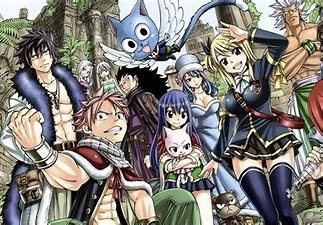
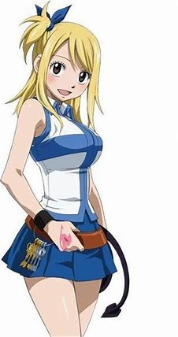
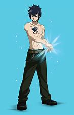
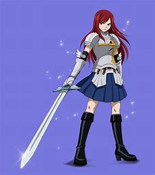

その2 FAIRYTAIL

内容
- FAIRYTAIL 作者：真島ヒロ ジャンル：アクション、ファンタジー
- あらすじ：世界中に幾多も存在する魔導士ギルド。そこは、魔導士達に仕事の仲介などをする組合組織である。立派な魔導士を目指す少女ルーシィは、
ひょんなことから火を食べ火を吐き火を纏う滅竜魔導士（ドラゴンスレイヤー）ナツと喋る青い猫ハッピーと出会い、彼らの所属するギルド「妖精の尻尾（フェアリーテイル）」に加入する。
王国最強と謳われながらも問題児だらけの「妖精の尻尾」だが、ルーシィはナツとハッピーとチームを組んで様々な依頼に挑んでいく。
登場人物
- ナツ・ドラグニル
- 「火竜（サラマンダー）」の異名を持つ。年齢不詳で、右肩に赤い紋章がある。好きなものは火、嫌いなものは乗り物。
滅竜魔法を操る「火の滅竜魔導士（ドラゴンスレイヤー）」。炎と素手での格闘術を駆使した肉弾戦を得意とする。
物事を深く考えない楽観的な性格にして大食漢。「妖精の尻尾」一の問題児である。
- ルーシィ・ハートフィリア
- 本作のヒロイン。星霊魔導士で、契約した星霊をそれぞれに対応した「鍵」で呼び出す「星霊魔法」が使える。
財閥の令嬢で父親が嫌い。自称小説家の卵でもある。変わり者が多いメンツの中では数少ない常識人。それゆえツッコミ役になることが多い。
契約した星霊を戦闘の「道具」扱いせず、同等の立場として接する優しさを備えている。

- グレイ・フルバスター
- 氷の造形魔導士で、その実力は「妖精の尻尾」内でもトップクラスである。
すぐに服を脱ぎ出す悪癖持ちで、無意識に服を脱いでいることが多い。好きな物は面白いことで、嫌いなものはナツ。
クールに見えるが、内に秘めた思い特にギルドの仲間を想う気持ちはナツにも負けておらず、
時には損な役回りを担ったり命や自分の命運を天秤にかける行動に躊躇いなく走る事も結構ある。

- エルザ・スカーレット
- 「妖精女王(ティターニア)」の異名を持つ、妖精の尻尾最強の女魔導士。
換装により自身の装備品（武器と衣服）を一瞬で変化させる魔法を使う。
厳格かつ豪胆・男勝りな性格からメンバーに恐れられているが、仲間が悩みを抱えている時は相談に乗り励ますなどの優しさも併せ持つ。
ギルドと仲間たちへの想いは人一倍強い

- ここには書かれていないが、ハッピーという青い猫はナツの親友。
FAIRYTAILのメンバーは皆仲が良く、絆もとても強い。他のキャラクターもぜひ参照してほしい。
彼らの名言
おすすめする理由
- FAIRYTAILは仲間をテーマとし、メンバーの仲間の想いに毎度泣かされることもある。
皆、壮絶な過去を持っており、危険に陥ることもあるが、仲間の力で乗り越えていける。
また、名言も多く、魔法も多いので、ずっと見てられ感動させるので、アニメや漫画でぜひ見てください。
ホームに戻る